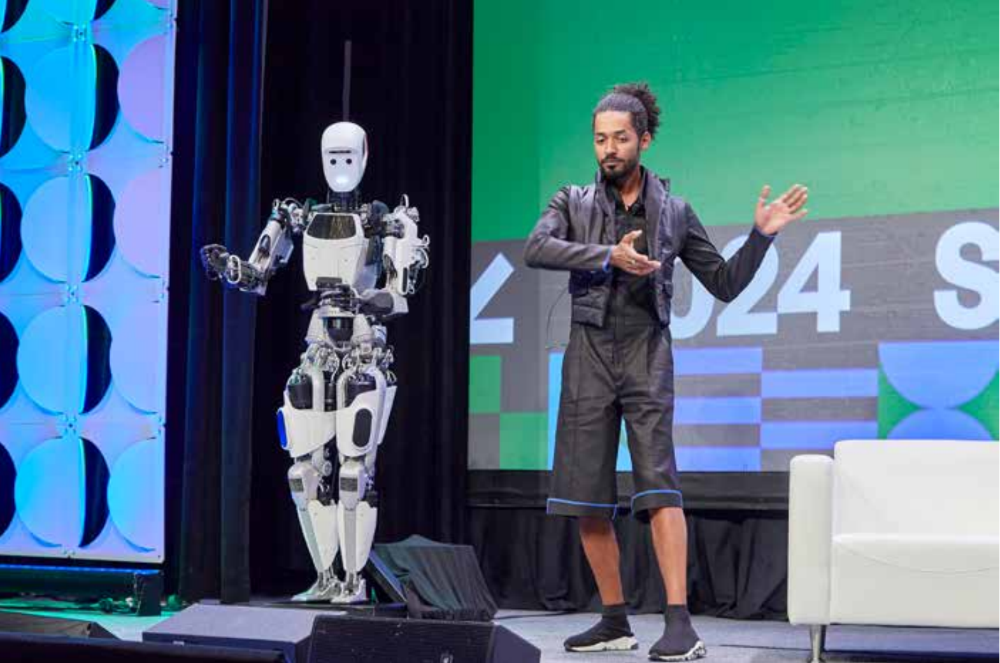

An interview-based explainer that uses Robotaxi and humanoid robots as the “first contact” moment—then pulls the discussion back to risk, traceability, and governance in real-world deployment.

This piece treats “embodied AI” less as a slogan and more as a governance problem that arrives the moment systems touch people, streets, factories, and homes. The reporting logic is simple: start with what the public can see (Robotaxi, humanoids), then trace what must be built behind the curtain—standards, traceability, and accountability.
Excerpt 1 · Why autonomous driving moved first: fewer degrees of freedom.
That’s true. One reason autonomous driving has advanced so quickly is that its operation is relatively simple: the control dimensions are lower. A steering wheel, a throttle, and a brake add up to just three degrees of freedom. Humanoid robots are a different creature. A dexterous hand alone can involve more than twenty degrees of freedom, not to mention joints in the legs, waist, head, and arms—fifty or more in total. At the level of action, the difficulty curve steepens dramatically.
Excerpt 2 · What makes “embodied intelligence” different: a language-model “brain” meets physical control.
Embodied intelligence can be thought of as having two parts: a “brain” and a “cerebellum.” The brain is closer to a large model—something like ChatGPT—capable of making real-time judgments about complex tasks, the way a person would: you’re hungry, so you go to the fridge and take a sandwich. That kind of commonsense reasoning is not what traditional control theory was built to do. The cerebellum handles the concrete work—movement of hands and feet, picking things up, opening a door.
Excerpt 3 · When machines inhabit the same space as humans, risk turns physical and emotional.
When a robot talks with a person, it can cause emotional harm through value conflicts; once it operates in physical space, it can also threaten bodily safety—something as blunt as stepping on someone. These risks are already visible in text-based AI. Today’s chatbots can simulate the role of a partner or a friend; that kind of tailored intimacy can foster emotional dependence. Give the same system a body, and the stakes rise with it.
Excerpt 4 · The missing infrastructure: definitions, sensors, and something like a black box.
Imagine a humanoid robot taking a step at home when someone suddenly falls. If the robot “knows” it shouldn’t step down, what happens next? Does it roll back a few seconds, or does it move forward while carefully clearing the obstacle? The details need to be defined. For safety, the robot may need cameras on its feet to read its immediate surroundings—an idea that could rewrite industry safety standards and steer technical development. And there’s the question of whether robots will need something like a black box: a device that records every operation and uploads the data to the cloud for regulatory oversight.